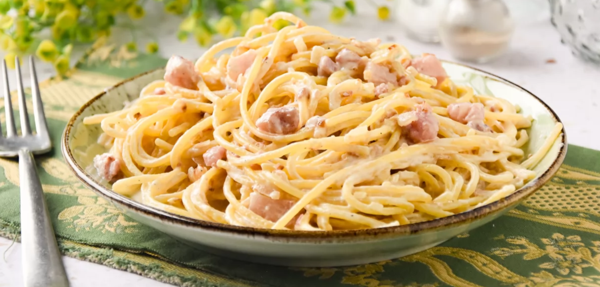

Hervir la pasta en una olla durante el tiempo que indica el paquete. Mientras cortamos la cebolla y pochamos en una sarten junto a los ajos picados. A continuación añadimos bacon troceado a la cebolla.
Añadimos la nata para cocinar junto a la cebolla pochada y el bacon. Añadimos tambien 2 cucharadas de queso de untar, philadelphia por ejemplo y dejamos que se derrita mientras removemos.
Una vez tengamos la pasta lista, la añadimos a la sartén con los demás ingredientes y mezclamos.
Salpimentamos y servimos.